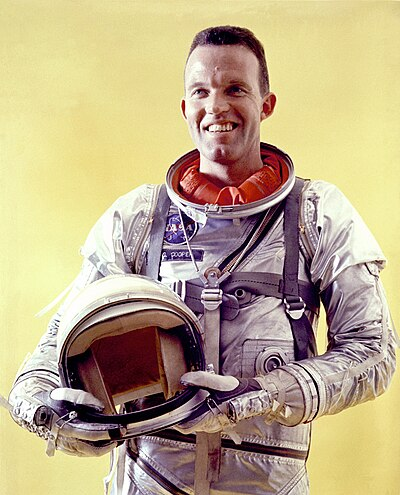

Mind Wars
The CIA spent 20 years trying to crack human consciousness. They destroyed the files. They shut down the programs. They ridiculed anyone who asked. But 89,000 pages survived — and they tell a different story.
The Program
Project MKULTRA
In 1953, CIA Director Allen Dulles authorized a program to explore “the use of biological and chemical materials in altering human behavior.” It would run for 20 years across 149 sub-projects at 80+ institutions — universities, hospitals, prisons, military bases. Its name was MKULTRA.
The subjects were often unwitting. The methods included LSD, electroshock, sensory deprivation, hypnosis, and psychological torture. The goal was control — not understanding. Not healing. Control.

Operation Midnight Climax
The First Casualty
Psychic Driving
CIA Director → Program Director → Psychic Driving → First Casualty → File Destruction
The Weapons
While MKULTRA explored chemical and psychological manipulation, a parallel track pursued something more precise: the direct transmission of information into the human brain using electromagnetic radiation. The science is peer-reviewed. The weapons are classified.
The Frey Effect
The Moscow Signal
Voice-to-Skull
Havana Syndrome
The Discoveries
While one arm of the intelligence community weaponized consciousness, another arm discovered something they couldn’t explain — and couldn’t control. At Stanford Research Institute, the CIA was getting results that broke every model they had.
Project Stargate
The Gateway Process
They shut it down because it did — and they couldn’t control who else could do it.
Stanford Research → CIA pilot → DIA expansion → Army integration → Full operations → “Cancellation”
The Suppression
In 1995, the CIA commissioned an external review of the Stargate program by the American Institutes for Research. The review acknowledged statistically significant results — then recommended termination anyway, citing lack of “actionable intelligence.” The program was declared dead. The research continued under different names and different budgets.
The Playbook
| Step | MKULTRA | Stargate | Gateway |
|---|---|---|---|
| Fund | 1953–1973 | 1972–1995 | 1983+ |
| Classify | Compartmented | Multiple codenames | Partial redaction |
| Destroy | Helms 1973 | “Terminated” 1995 | Page 25 withheld until 2021 |
| Ridicule | “Conspiracy theory” | “Pseudoscience” | “New Age nonsense” |
| Continue | Sub-projects → contractors | Classified successors | Unknown |
MindWar
The Lineage
This is not a story about one program. It’s a story about a lineage — an 80-year institutional commitment to understanding, weaponizing, and suppressing human consciousness. The names change. The budget lines shift. The objective has never wavered.
80 Years
Eighty years. From OSS hypnosis experiments to directed energy weapons targeting American diplomats. From LSD dosing in San Francisco safe houses to 89,000 pages of declassified remote viewing data. The through-line is institutional: the same agencies, the same classification structures, the same pattern of denial.
They never stopped. They just changed the name.
The Crack
Here is the paradox the intelligence community never solved: consciousness cannot be permanently captured because it is the thing doing the capturing. Every attempt to weaponize it produced people who woke up instead. The program’s greatest failure was its greatest discovery.



They never considered that consciousness was already on the inside — looking out.
Every program in this investigation — MKULTRA, Stargate, Gateway, Havana — points to the same conclusion: consciousness is more than the brain, and someone has known this for decades. The question isn’t whether it’s real. The question is who else knows — and what they’re doing with it.
Disclosure is not a single event. It’s a process. And it only works if people are paying attention.